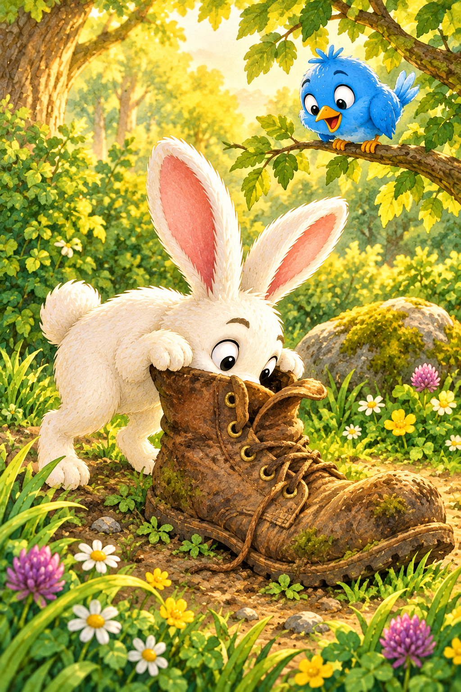
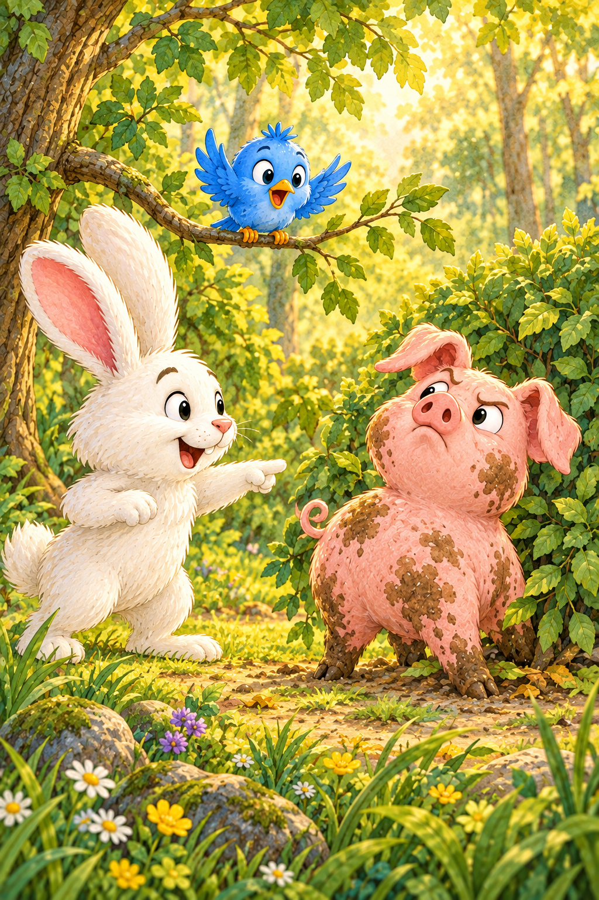
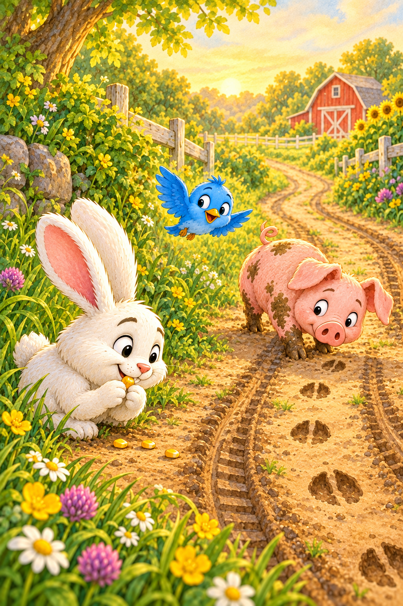
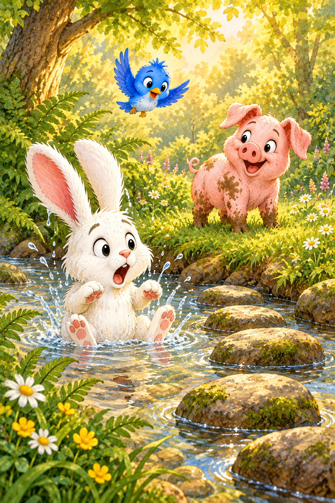
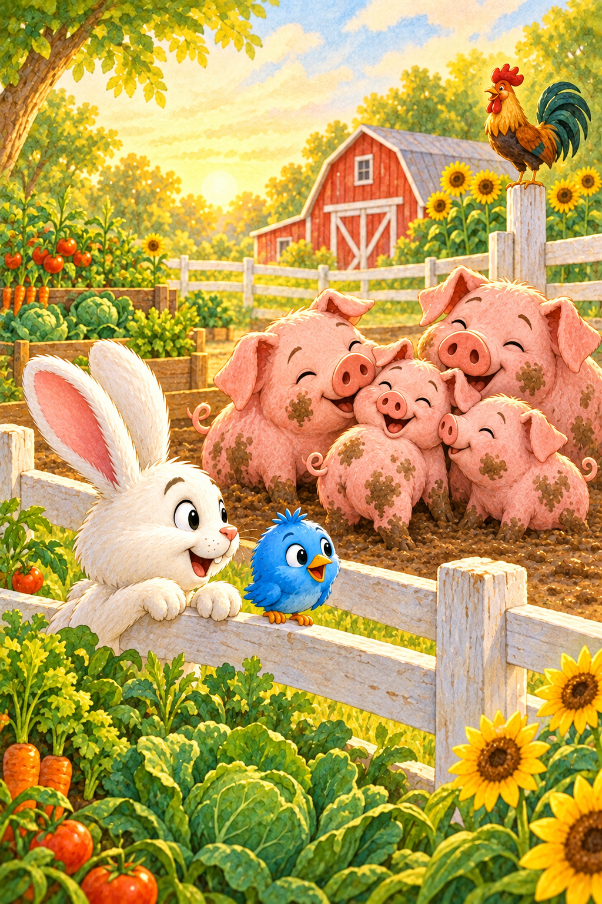
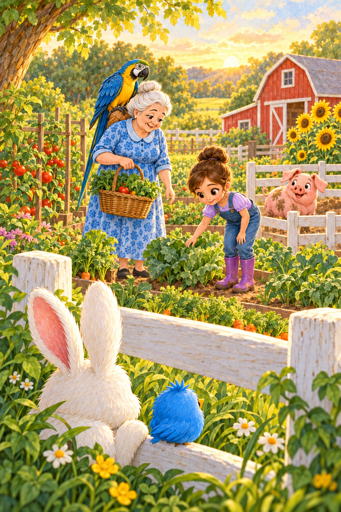
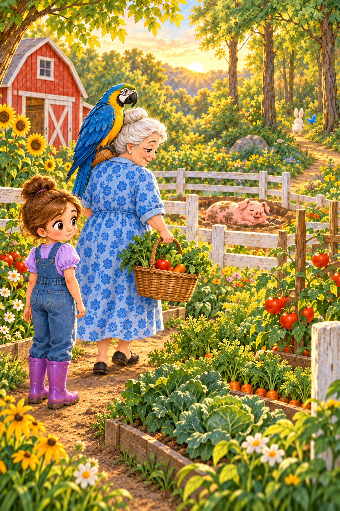

Waffles’ stomach made a terrible noise.
GRRRRUMBLE.
Pip looked down from his branch.
“Was that thunder?”
“No,” said Waffles. “That was an emergency.”
“What kind of emergency?”
“A dinner emergency.”

An illustrated woodland adventure.

Waffles’ stomach made a terrible noise.
GRRRRUMBLE.
Pip looked down from his branch.
“Was that thunder?”
“No,” said Waffles. “That was an emergency.”
“What kind of emergency?”
“A dinner emergency.”
So Waffles and Pip set off in search of something delicious.
Waffles checked beneath a bush.
Nothing.
He checked behind a rock.
Nothing.
He even checked inside an old boot.
Pip stared at him.
“Were you expecting soup?”
“You never know.”

Then—
SNORT!
Waffles froze.
Pip froze.
The bush beside them wiggled.
SNORT! SNORT!
Waffles whispered, “Dinner?”
A pink nose poked through the leaves.
Then two ears.
Then one very muddy little pig.
Waffles’ eyes grew enormous.
“I FOUND BACON!”
The pig’s mouth dropped open.
Pip nearly fell out of the tree.
“WAFFLES!”
“What?”
“You cannot just name a pig Bacon!”
Waffles looked at the pig.
“I think it suits him.”
“It absolutely does not.”
Pip hopped closer.
“Sorry about him. What’s your name?”
The pig lifted his chin.
“Charlie.”
He looked directly at Waffles.
“My name is Charlie.”
Then he added,
“And I am not food.”
Waffles sighed.
“There goes that plan.”

Charlie had a bigger problem.
He was lost.
“I slipped through a loose part of my fence this morning,” he explained. “Then I followed an apple.”
Pip blinked.
“An apple?”
“It was rolling.”
“That explains nothing.”
“It made sense at the time.”
Waffles nodded seriously.
“It still does.”
Charlie remembered bits and pieces about home.
“There’s a big red barn.”
Pip pointed toward the horizon.
“There are three of those.”
“A white fence?”
“Five.”
“A noisy rooster?”
From somewhere far away came—
COCK-A-DOODLE-DOOOOO!
Charlie bounced.
“THAT ONE!”
And off they went.

They crossed a tiny creek.
Charlie splashed through it.
Pip flew over it.
Waffles attempted a magnificent leap.
SPLASH!
Charlie stared at the soaking-wet rabbit.
“You could have walked across the rocks.”
Waffles climbed out.
“I was being adventurous.”
“You missed.”
“I was being very adventurous.”
Soon they found hoofprints in the dirt.
Then wagon tracks.
Then a few kernels of corn.
Charlie sniffed the ground.
“I know this place!”
Waffles sniffed the corn.
“I also know this place.”
Pip sighed.
“You’re eating the clues.”
“They were delicious clues.”

At last, the trees opened.
There it was.
A red barn.
A white fence.
A vegetable garden.
And one very loud rooster standing on top of a post like he owned the entire world.
Charlie squealed.
“HOME!”
Charlie hurried toward a fenced enclosure beside the barn.
Three pigs came running.
OINK! OINK! OINK!
Charlie squeezed through the gate and disappeared into a pile of happy snorts, muddy noses, and wagging curly tails.
Pip smiled.
“We did it.”
Waffles looked around.
“Excellent.”
Pip narrowed his eyes.
“Why are you looking at the garden?”
“No reason.”
Charlie came trotting back to the fence.
“Thank you for bringing me home.”
“You’re welcome,” said Pip.
Waffles leaned against the fence.
“Just so you know, Bacon was available if you ever wanted a nickname.”
“My name is Charlie.”
“Bacon Charlie?”
“NO.”
Pip laughed so hard he nearly dropped off the fence.

Then Pip noticed someone near the vegetable garden.
An older woman was walking between the rows, carrying a basket.
Beside her was a little girl.
Cracker, Grandma’s blue-and-gold macaw, rode on her shoulder.
The girl stopped to look at something growing beneath the leaves.
And on her feet were the brightest purple farm boots Pip had ever seen.
Waffles squinted through the fence.
“Pip?”
“Yes?”
“Why does that girl have purple feet?”
“Those are boots.”
“Oh.”
Waffles watched her for another moment.
“Do you think she knows where dinner is?”
Pip grabbed Waffles by the ears before he could climb through the fence.
“We are leaving.”

Behind them, Charlie called,
“Come visit again!”
Waffles waved.
“Goodbye, Charlie!”
He paused.
“Goodbye, Definitely-Not-Bacon!”
“WAFFLES!”
The little girl in the purple boots glanced toward the pig enclosure.
But by then, Pip and Waffles had disappeared into the trees.
Charlie settled happily into the mud.
Grandma continued down the garden path, with Cracker on her shoulder.
Lily looked toward the woods.
She could have sworn she had just seen…
a white rabbit
and a little bird disappearing into the trees.
The End.